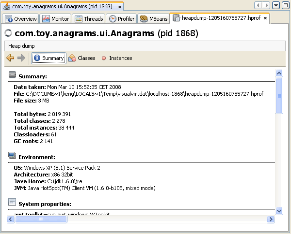
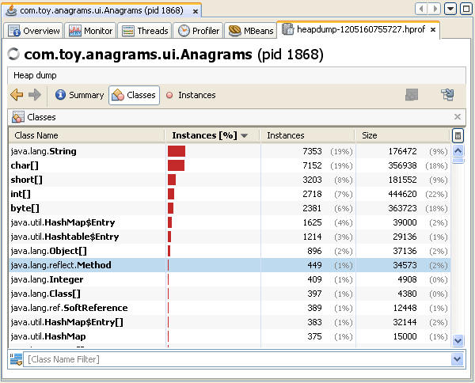
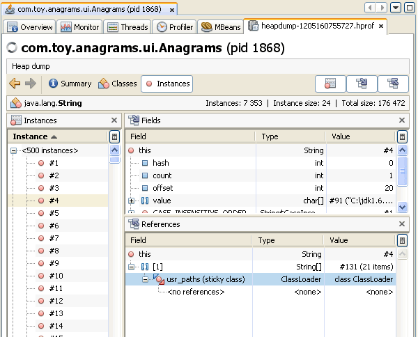

힙덤프 살펴보기
힙덤프 파일의 내용을 살펴보거나 힙메모리에 할당된 객체를 빠르게 보기 위해서 VisualVM을 사용할 수 있다. 힙덤프는 메인창의 하위탭인 힙덤프탭에 표기된다. 로컬시스템에 저장된 바이너리 힙덤프 파일(.hprof)을 열어볼수도 있고 실행중인 애플리케이션의 힙덤프를 생성할수도 있다.
힙덤프는 특정시점의 JVM힙메모리내 존재하는 모든 객체의 스냅샷이다. JVM소프트웨어는 힙메모리에 모든 클래스의 인스턴스와 배열을 위해 메모리를 할당한다. 가비지컬렉터(garbage collector)는 객체의 참조가 없어서 더 이상 사용하지 않을때 힙메모리를 회수한다. By examining the heap you can locate where objects are created and find the references to those objects in the source. If the JVM software is failing to remove unneeded objects from the heap, VisualVM can help you locate the nearest garbage collecting root for the object.
힙덤프 파일 열기
로컬시스템에 저장된 힙덤프 파일을 가지고 있다면, 메인메뉴에서 File > Load 를 사용해서 VisualVM에서 파일을 열수 있다. VisualVM은 .hprof파일 포맷으로 저장된 힙덤프 파일을 열 수 있다. 저장된 힙덤프를 열면, 힙덤프는 메인창에 탭으로 열린다.
힙덤프 생성
로컬에서 실행중인 애플리케이션의 힙덤프를 생성하기 위해 VisualVM을 사용할 수 있다. 힙덤프를 생성하기 위해 VisualVM을 사용하면, 생성된 덤프는 명시적으로 저장하지 않으면 VisualVM을 종료할때 사라진다.
다음에 나열된 방법으로 힙덤프를 생성할 수 있다.
- Applications창에서 애플리케이션을 선택하고 마우스 우측 버튼을 클릭하고 Heap Dump를 선택한다.
- 애플리케이션의 Monitor탭에서 Heap Dump를 클릭한다.
로컬 애플리케이션을 위한 힙덤프는 애플리케이션 탭에서 하뉘 탭으로 열린다. 힙덤프는 Applications창에서 애플리케이션 노드아래 생성한 시점이 찍히는 형태로 힙덤프 노드를 표기한다. 로컬시스템에 힙덤프를 저장하기 위해, Applications창의 힙덤프를 선택하고 마우스 우측 버튼을 클릭한 뒤 Save As를 선택한다.
힙덤프 살펴보기
VisualVM은 다음의 몇가지 뷰를 사용해서 힙덤프를 시작적으로 볼수 있다.
Summary 뷰
힙덤프를 열면, VisualVM은 디폴트로 Summary뷰를 표기한다. Summary뷰는 힙덤프를 생성한 실행중인 환경정보와 다른 시스템 프로퍼티를 표기한다.
Classes 뷰
Classes뷰는 클래스의 목록을 나열하고 각각의 참조된 인스턴스의 갯수와 퍼센트를 표기한다. 클래스명을 마우스 우측 버튼으로 클릭해서 Show in Instances View 메뉴를 클릭하면 특정 클래스의 인수턴스의 목록을 볼수 있다.
테이블의 칼럼별 헤드를 클릭해서 결과를 보고자 하는 형태로 정렬할 수 있다. 목록 하단에 클래스명으로 필터링을 할 수도 있고 클래스를 선택해서 마우스 우측 버튼을 클릭해서 나오는 메뉴에서 Show Only Subclasses를 사용해서 하위클래스만 표기할 수도 있다.
Instances 뷰
Instance뷰는 선택한 클래스의 객체 인스턴스를 표기한다. Instance항목에서 인스턴스를 선택하면, VisualVM은 respective항목에서 해당 클래스의 필드와 참조되는 형태를 표기한다. References항목에서, 가비지 콜렉션의 가장 상위 객체를 표기하기 위해 특정 아이템을 마우스 우측 클릭하고 Show Nearest GC Root메뉴를 선택하자.
